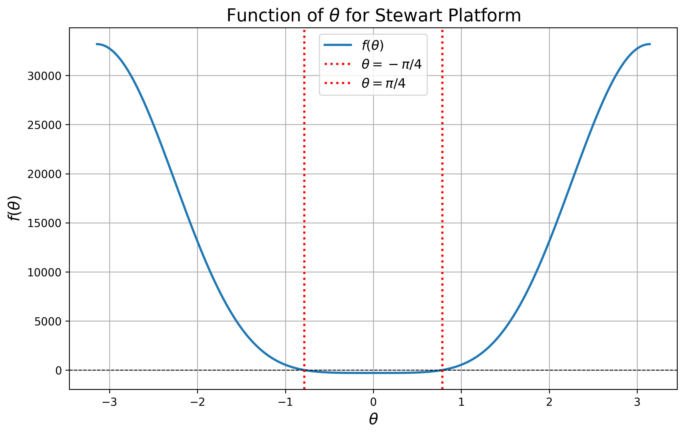
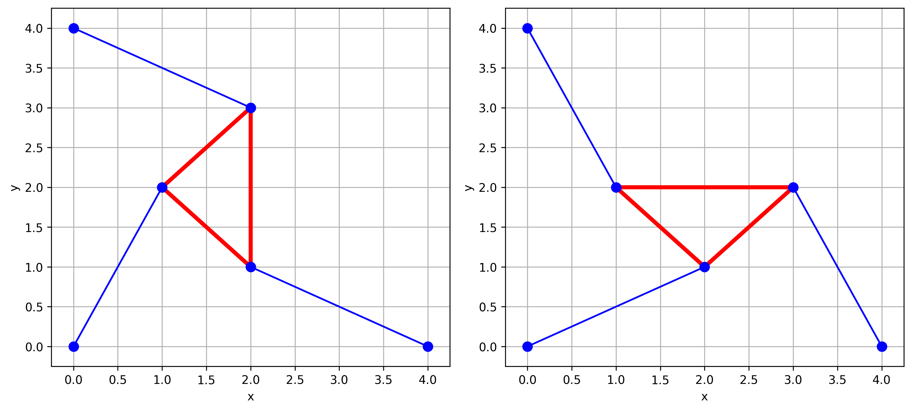
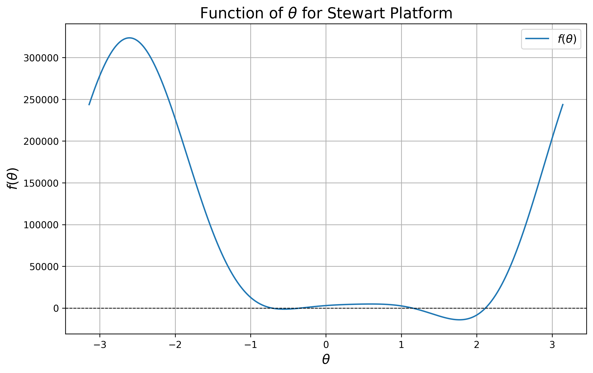
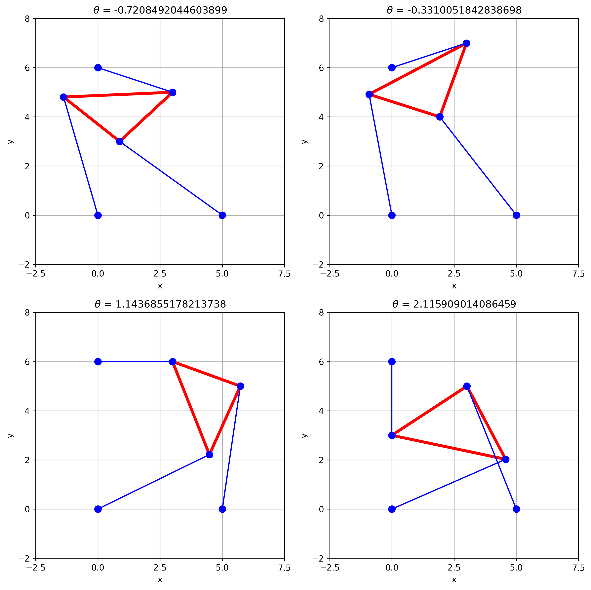
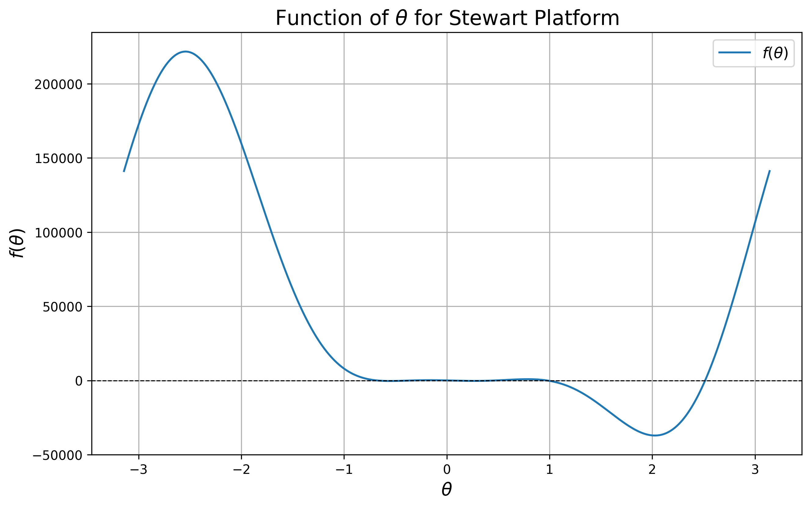
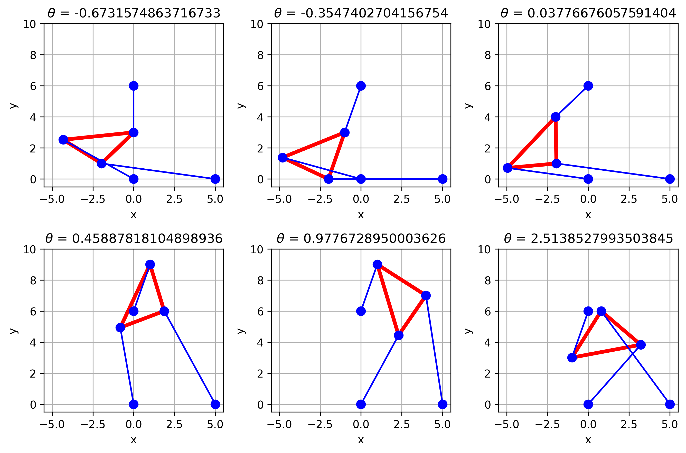
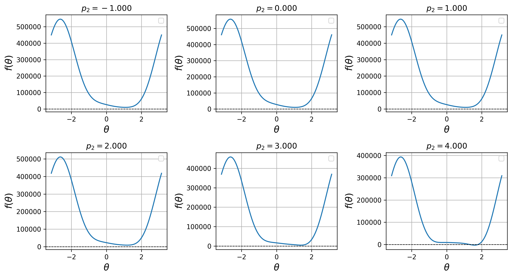
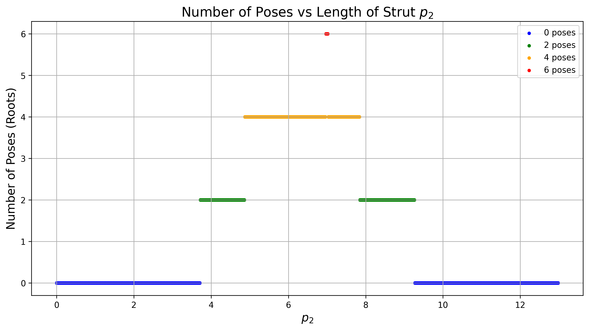

Here’s an improved and more refined version of the markdown with a polished structure, consistent format, and placeholders for your plots.
title: “Reality Check 1”
subtitle: “MATH411”
author: “Nathan Lunceford”
format:
pdf:
self-contained: true
page-layout: full
title-block-banner: true
number-sections: false
html-math-method: katex
code-fold: true
code-summary: “Show the code”
code-overflow: wrap
code-copy: hover
code-tools:
source: false
toggle: true
caption: See code
Reality Check 1
Stewart Platform Overview
The Stewart platform is a mechanical system consisting of six adjustable prismatic joints (struts) that provide six degrees of freedom (three translations and three rotations). It is widely used in applications like robotics, flight simulators, and precision machining, where precise control over the platform’s position and orientation is critical.
In this project, we simplify the platform to a two-dimensional model. This 2D Stewart platform consists of a triangular platform connected to fixed anchor points by three adjustable struts. The objective is to solve the forward kinematics problem, where we determine the position \((x, y)\) and orientation \(\theta\) of the platform, given the lengths of the three struts (\(p_1\), \(p_2\), \(p_3\)).
Unlike the inverse kinematics problem, which calculates the strut lengths given a specific platform position, the forward kinematics problem has no closed-form solution. Instead, we reduce the problem to a single nonlinear equation in \(\theta\), denoted as \(f(\theta)\). Solving this equation numerically reveals the valid poses (configurations) of the platform.
Inverse Kinematics Equations
To derive the forward kinematics equations, we start by considering the inverse kinematics of the planar Stewart platform. The system consists of three struts connecting fixed anchor points to the vertices of the triangular platform. The relationship between the platform’s configuration and the strut lengths is described by the following equations:
\[ p_1^2 = x^2 + y^2 \]
\[ p_2^2 = (x + A_2)^2 + (y + B_2)^2 \]
\[ p_3^2 = (x + A_3)^2 + (y + B_3)^2 \]
Here, \(p_1\), \(p_2\), and \(p_3\) are the lengths of the struts, and the constants \(A_2\), \(B_2\), \(A_3\), and \(B_3\) are related to the platform’s orientation and the fixed anchor points.
Breakdown of Constants
The constants \(A_2\), \(B_2\), \(A_3\), and \(B_3\) are derived from the platform’s geometry and orientation:
- \(A_2 = L_3 \cos(\theta) - x_1\)
- \(B_2 = L_3 \sin(\theta)\)
- \(A_3 = L_2 \cos(\theta + \gamma) - x_2\)
- \(B_3 = L_2 \sin(\theta + \gamma) - y_2\)
Where:
- \(L_1\), \(L_2\), and \(L_3\) are the lengths of the sides of the triangular platform.
- \(\gamma\) is the angle opposite from side \(L_1\).
- \((x_1, 0)\) and \((x_2, y_2)\) are the positions of the anchor points.
These constants are necessary for expressing the inverse kinematics problem, which solves for the strut lengths (\(p_1\), \(p_2\), \(p_3\)) given the platform’s position \((x, y, \theta)\). In the forward kinematics problem, we aim to determine \((x, y, \theta)\) from the known strut lengths.
From Inverse to Forward Kinematics
To solve the forward kinematics problem, we eliminate the unknowns \(x\) and \(y\) from the inverse kinematics equations. This involves expanding and rearranging the equations to express \(x\) and \(y\) in terms of the constants and \(\theta\). The final equation for \(\theta\) is derived as:
\[ x = \frac{B_3(p_2^2 - p_1^2 - A_2^2 - B_2^2) - B_2(p_3^2 - p_1^2 - A_3^2 - B_3^2)}{2(A_2B_3 - B_2A_3)} \]
\[ y = \frac{-A_3(p_2^2 - p_1^2 - A_2^2 - B_2^2) + A_2(p_3^2 - p_1^2 - A_3^2 - B_3^2)}{2(A_2B_3 - B_2A_3)} \]
These expressions for \(x\) and \(y\) hold as long as the denominator \(D = 2(A_2B_3 - B_2A_3)\) is nonzero. Substituting these values into the first inverse kinematics equation yields the final equation for \(\theta\):
\[ f(\theta) = N_1^2 + N_2^2 - p_1^2 D^2 = 0 \]
Here, \(N_1\) and \(N_2\) are intermediate expressions based on the system of equations. Solving this equation gives the valid values of \(\theta\) corresponding to the platform’s possible poses.
Application in the Code
In the code, these constants (\(A_2\), \(B_2\), \(A_3\), \(B_3\)) are computed based on the platform geometry and encapsulated in a data structure. The function \(f(\theta)\) is then derived using the above equations, and numerical solvers are used to find the values of \(\theta\) where \(f(\theta) = 0\).
By solving this equation for different values of \(\theta\), we determine the valid poses of the Stewart platform. The resulting positions \((x, y)\) and orientations \(\theta\) are verified by checking that the computed strut lengths match the given values.
Problem 1
Objective: Write a python function for \(f(\theta)\). The parameters \(L_1, L_2, L_3, \gamma, x_1, x_2, y_2\) are fixed constants, and the strut lengths \(p_1\), \(p_2\), \(p_3\) are known for a given pose. Test the function with specific values.
Solution Process:
- Mathematical Approach:
- The function \(f(\theta)\) relates the strut lengths and the orientation angle \(\theta\). It incorporates trigonometric relationships between the platform’s orientation and its anchor points.
- The goal is to derive the necessary expressions based on the geometry of the Stewart platform and simplify them into a single function for \(f(\theta)\).
- Implementation in Code:
- I created a Python function
f(\theta)that calculates \(f(\theta)\) for the given constants and strut lengths. - To test the function, I initialized the constants with specific values and verified that \(f(\theta) = 0\) at the expected points \(\theta = -\pi/4\) and \(\pi/4\).
- I created a Python function

Problem 2
Objective: Plot \(f(\theta)\) over the interval \([-\pi, \pi]\).
Solution Process:
- Mathematical Approach:
- Visualizing the behavior of \(f(\theta)\) is crucial for understanding where the roots are located, as these roots correspond to valid poses of the platform.
- Implementation in Code:
- I generated a range of \(\theta\) values between \(-\pi\) and \(\pi\), computed \(f(\theta)\) for each value, and plotted the function. The plot clearly shows the roots, matching the values from Problem 1.

Problem 3
Objective: Reproduce a figure of the platform with a triangle representing the platform and small circles for the anchor points.
Solution Process:
- Mathematical Approach:
- The positions of the platform’s vertices were calculated based on the strut lengths and the angle \(\theta\). Using trigonometric relationships, I derived expressions for the vertices.
- Implementation in Code:
- I used helper functions to calculate the positions of the platform’s vertices and anchor points. The resulting plot shows the platform’s geometry and the anchor points.

Problem 4
Objective: Solve the forward kinematics problem for a specific set of parameters and plot the resulting configurations.
Solution Process:
- Mathematical Approach:
- The goal was to solve \(f(\theta)\) to find the platform’s valid poses. I identified the roots of \(f(\theta)\) and calculated the platform’s position and orientation for each root.
- Implementation in Code:
- I solved \(f(\theta)\) numerically and plotted the corresponding configurations for each valid pose.


Problem 5
Objective: Modify the strut length \(p_2 = 7\) and re-solve the problem to find six
distinct poses.
Solution Process:
- Mathematical Approach:
- Modifying \(p_2\) affects the roots of \(f(\theta)\) and can introduce additional poses. I solved the problem again to find the new configurations.
- Implementation in Code:
- After modifying the constants, I identified six distinct poses and plotted the corresponding configurations.


Problem 6
Objective: Find a strut length \(p_2\) such that the platform has exactly two poses.
Solution Process:
- Mathematical Approach:
- By iteratively adjusting \(p_2\), I searched for the value that yields exactly two valid poses.
- Implementation in Code:
- I implemented a function to adjust \(p_2\) and find the two roots of \(f(\theta)\), verifying the result with a plot.

Problem 7
Objective: Calculate the intervals in \(p_2\) where the platform has 0, 2, 4, or 6 poses.
Solution Process:
- Mathematical Approach:
- The number of valid poses changes as \(p_2\) varies. By solving \(f(\theta)\) for a range of \(p_2\) values, I classified the intervals based on the number of poses.
- Implementation in Code:
- I implemented a loop to adjust \(p_2\) and count the valid poses for each value, visualizing the results in a plot.
